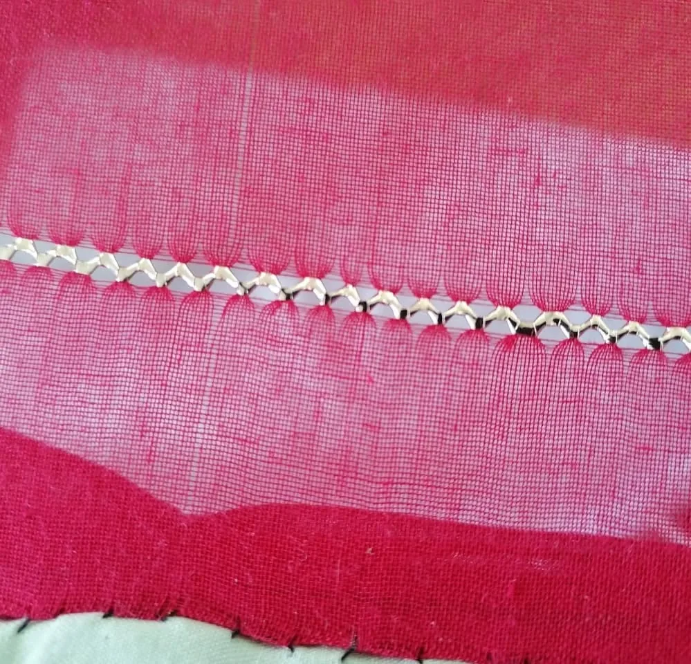
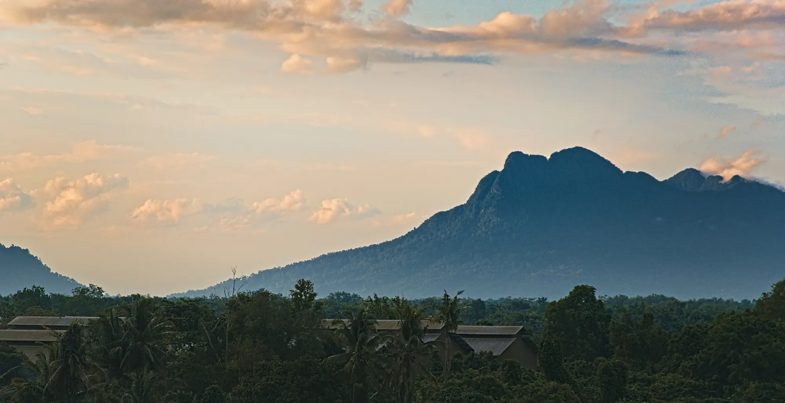
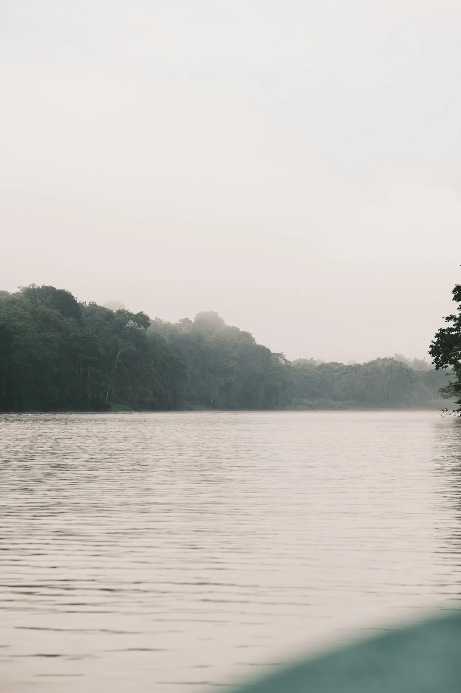
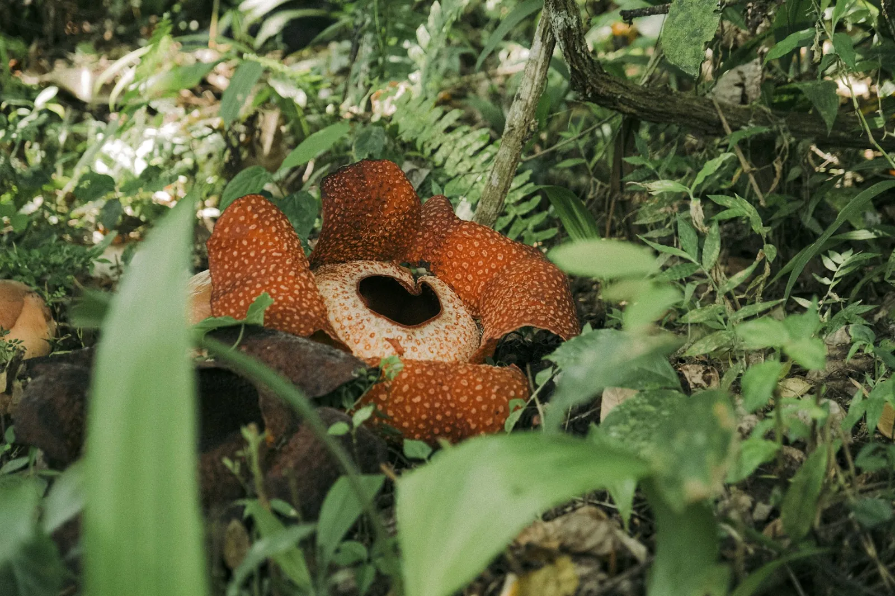
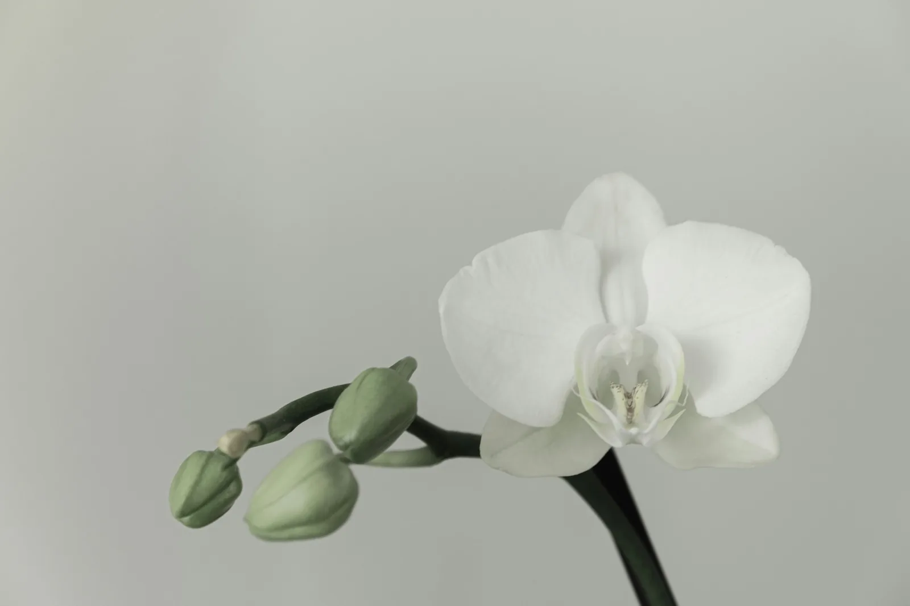
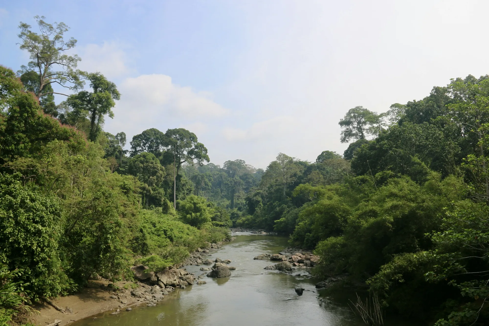
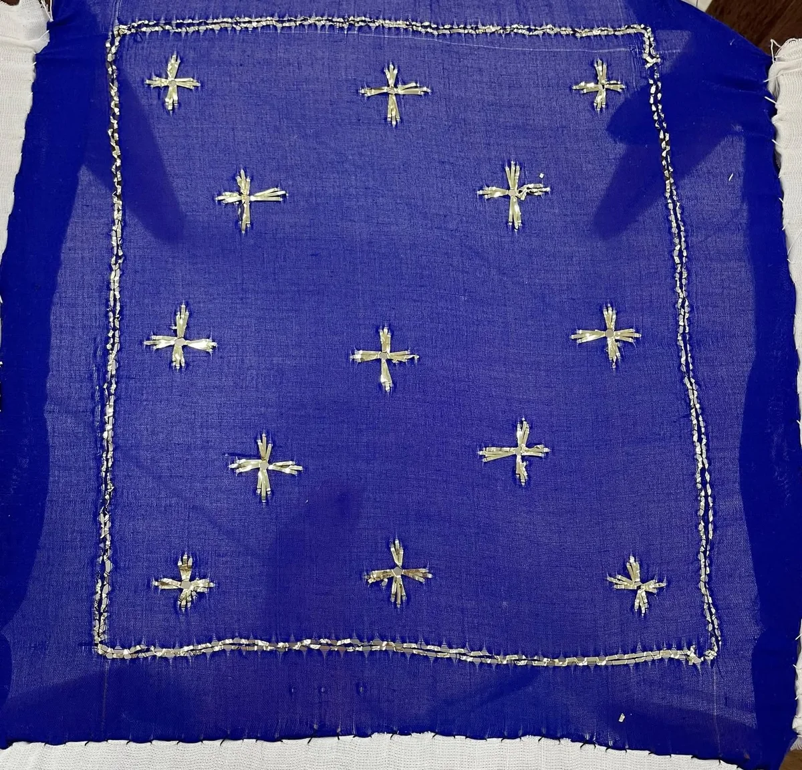
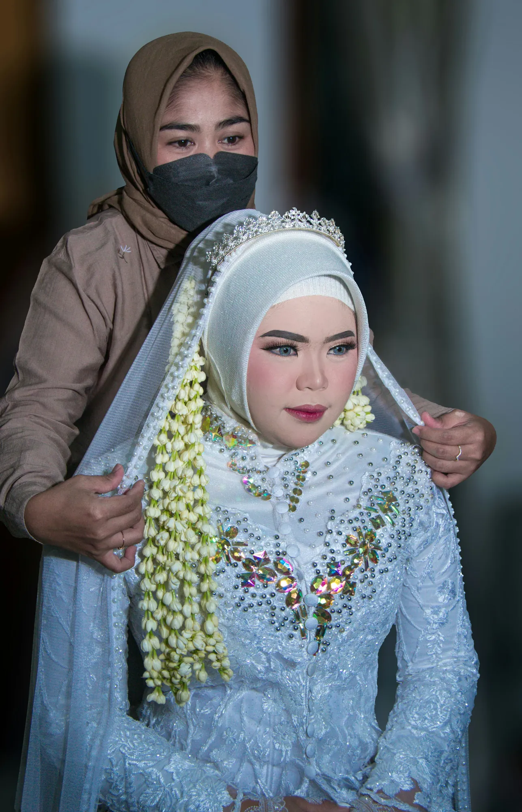
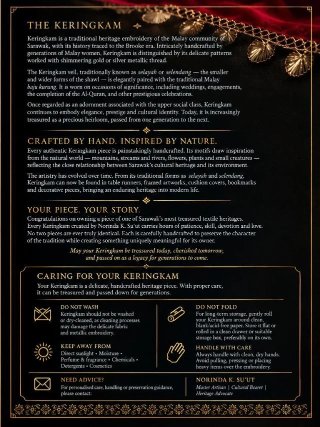
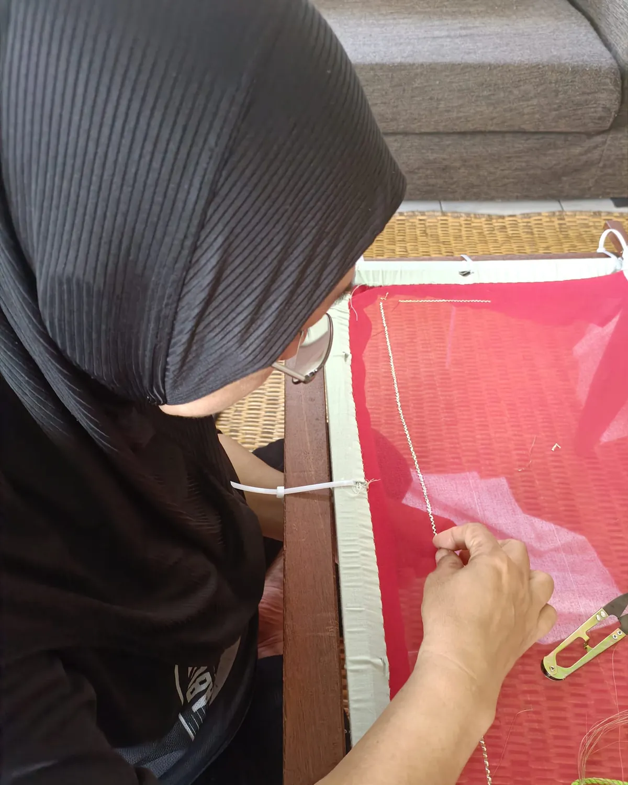

Prepare the gauze
The sheer fabric is hemmed along its edges, then stretched taut on a wooden frame so that every thread stays straight while it is worked.
Pedangan — the wooden embroidery frame
Keringkam Sarawak, hand-embroidered by Norinda K. Su'ut
Flat gold thread, stitched into sheer gauze one pierce at a time. Every selayah and selendang is made to order, and made to be handed down.
Selayah, black gauze and gold, 2022

Red gauze, scattered gold flowers
Keringkam is gold thread stitched into sheer gauze by the Malay women of Sarawak. Its story reaches back to the Brooke era, when it was worn by the upper class of Kuching. Today it is still worn at weddings, engagements and the completion of the Al-Quran, then rolled in paper and passed to the next generation.
Two forms of the same craft
The veil
The smaller form. Worn over the head and resting on the shoulders, paired with the baju kurung for an engagement or an akad nikah.
Usually about 55 × 95 cm
The shawl
The wider, longer form. Draped from the head down to the waist, with room for borders, vines and scattered stars across the whole field.
Usually about 77 × 156 cm


Sizes vary with each commission. Both are cut from the same sheer gauze and finished by hand.
Made to order
Choose the form, the colour of the gauze and the motifs. Norinda stitches every piece by hand, so no two are ever the same.
See every pieceScattered flowers inside a climbing vine border.

Climbing flowers and an open lattice in gold.

Small stars across the field, a flowing border at the hem.

A lattice border with stars scattered beside it.

A gauze panel worked in gold and framed to hang.

Embroidered to the length of your own table.

Gold-stitched covers for the room you keep for guests.

A small piece of keringkam for a favourite book.
Keringkam is slow work. These are the four stages every piece passes through before it leaves the frame.



The sheer fabric is hemmed along its edges, then stretched taut on a wooden frame so that every thread stays straight while it is worked.
Pedangan — the wooden embroidery frame
Each motif is placed by counting the threads of the gauze. It is how every petal and star sits true, and how the borders meet at the corners.
Thread count — the first of keringkam's two techniques
A flat strip of gold thread pierces the gauze and is buried with each stitch, leaving a small gleaming diamond on the surface.
Tikam timbus — "pierce and bury"
Borders come first, then the field is filled. Depending on the size and the motifs, a piece can take from one to six months to complete.
Every piece leaves with a care card for the family who will keep it
Keringkam motifs come from the world around the embroiderer: mountains, rivers, flowers and the plants that climb between them. Hover a motif to see where it comes from.

Stepped peaks, like Santubong rising behind the coast.

A flowing border. Students work it in their third week of class.

Eight-petalled rosettes, scattered across the field or set in a row.

Borneo's orchids, reduced to a few precise stitches.

Stems that climb and curl along a border, never quite the same twice.

Small stars spaced evenly over the gauze. Often a student's first motif.
From the Astana to your family
Once an adornment of Sarawak's upper class, keringkam is now a treasured heirloom, passed from one generation to the next.
Keringkam's history is traced to the reign of the Brooke Rajahs. It was an adornment of Sarawak's Malay upper class, worn as a mark of prestige.

The Astana, Kuching. Photo: Cerevisae, CC BY-SA 3.0
In her memoir of life in Sarawak, Ranee Margaret Brooke recalled the women of Kuching wearing the tudung keringkam.
Tudung keringkamTudung means head covering. The veil she described is the ancestor of the selayah still stitched today.
Weddings, engagements, the completion of the Al-Quran. Afterwards the piece is rolled in acid-free paper and kept for the next celebration, and the next generation.

Norinda teaches keringkam at UNIMAS and through National Training Week, and has shared the craft with students at Kayseri University in Türkiye.

National Training Week class, 2026
The hands behind every piece
Every Kilauan piece is stitched by Norinda, who also teaches keringkam to university students and to anyone patient enough to learn it. Her advice to every class is the same.
Sulam dengan teknik yang betul."Embroider with the right technique."
Commission
No two pieces are ever truly identical. Tell Norinda about the occasion, the colours and the motifs you love, and she will design a selayah or selendang around them.

The card that travels with every Kilauan piece. With proper care, keringkam can be treasured for generations.
After the celebration
Keringkam should not be washed or dry-cleaned. Cleaning can damage the delicate fabric and the metallic embroidery.
For long-term storage, gently roll your keringkam around clean, acid-free paper. Store it flat or rolled, in a clean drawer or box of its own.
Direct sunlight, moisture, perfume and fragrance, chemicals, detergents and cosmetics.
Always handle with clean, dry hands. Avoid pulling, pressing or placing heavy items over the embroidery.
Need advice? For personalised care, handling or preservation guidance, send Norinda a message.
Message on Instagram

Classes and workshops
Classes begin with the basics: the materials, hemming the edges, threading the needle and mounting the gauze on the frame. By the third week, students are working the tali air border.
From the frame